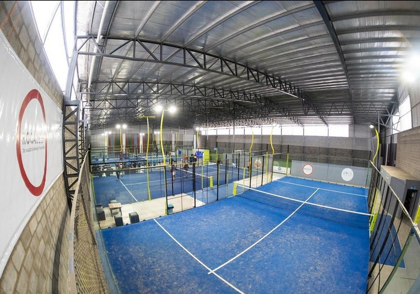
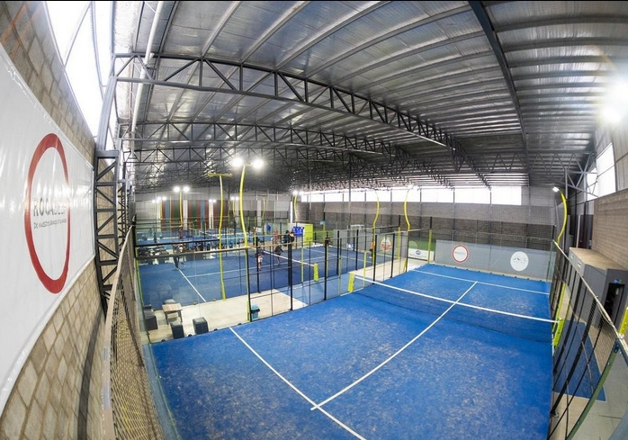

Nuestros Servicios
Nuestras canchas profesionales de pádel en Blue Sport Indoor Club son el corazón de la acción. Diseñadas para cumplir con los estándares más altos, cada una de nuestras pistas ofrece superficies impecables y tecnología de iluminación LED de última generación, asegurando partidos emocionantes tanto de día como de noche. Con un total de 5 canchas disponibles, cada una equipada con suelo de última tecnología para minimizar el impacto en las articulaciones, proporcionamos un entorno óptimo para disfrutar del pádel en todas las condiciones. Ya sea que seas un principiante entusiasta o un competidor experimentado, nuestras instalaciones están diseñadas para inspirar y elevar tu juego al siguiente nivel.
 

En nuestra tienda especializada en Blue Sport Indoor Club, encontrarás todo lo que necesitas para equiparte como un verdadero profesional del pádel. Desde palas de las marcas más reconocidas hasta ropa deportiva de alto rendimiento y accesorios esenciales como pelotas y grips, tenemos una amplia selección de productos para satisfacer todas tus necesidades y preferencias. Nuestro equipo de expertos está siempre disponible para asesorarte y garantizar que encuentres el equipo perfecto que se adapte a tu estilo de juego y nivel de habilidad. Además, ofrecemos servicios de mantenimiento para asegurar que tu equipo esté siempre en óptimas condiciones para competir al máximo nivel.


Además de nuestras impresionantes instalaciones de pádel, Blue Sport Indoor Club también ofrece una cancha de fútbol 5 de primera categoría. Con un césped sintético de última generación para un juego rápido y dinámico, nuestra cancha está diseñada para brindar una experiencia de fútbol intensa y emocionante. Perfecta para partidos entre amigos, torneos corporativos o simplemente para mantenerse en forma, la cancha de fútbol 5 en nuestro club es el lugar ideal para disfrutar del deporte más popular del mundo en un ambiente profesional y amigable. Ya sea que busques competir seriamente o simplemente divertirte, te garantizamos una experiencia inigualable en cada partido que juegues en Blue Sport Indoor Club.


En Blue Sport Indoor Club, entendemos que la energía fuera de la pista es tan importante como el juego en sí. Es por eso que nuestra cafetería y quincho ofrecen un espacio acogedor donde puedes relajarte y recargar energías después de una intensa sesión de pádel. Disfruta de una variedad de opciones gastronómicas que van desde comidas ligeras y saludables hasta platos más sustanciosos, todos preparados con ingredientes frescos y de alta calidad. Ya sea que desees tomar un café con amigos, celebrar una victoria o simplemente disfrutar de un momento de tranquilidad, nuestro ambiente familiar y acogedor te ofrece la escapada perfecta dentro de nuestro vibrante club deportivo.